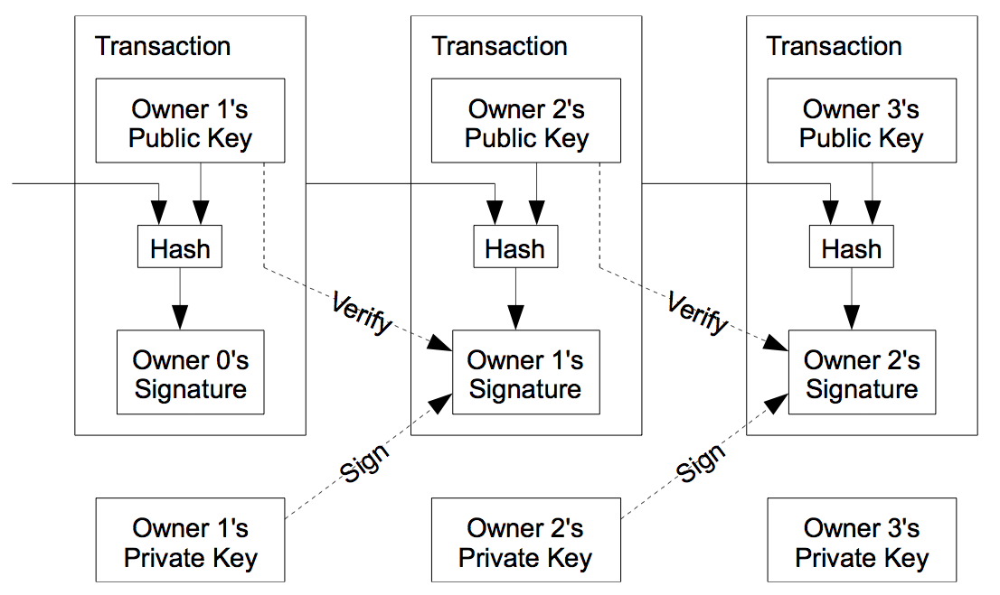
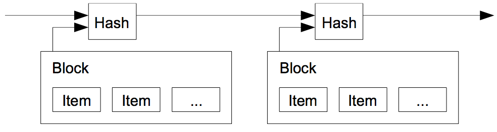
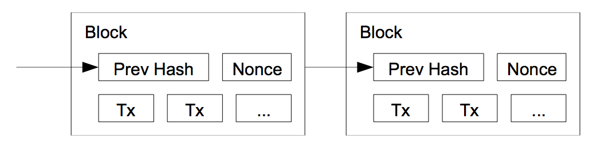
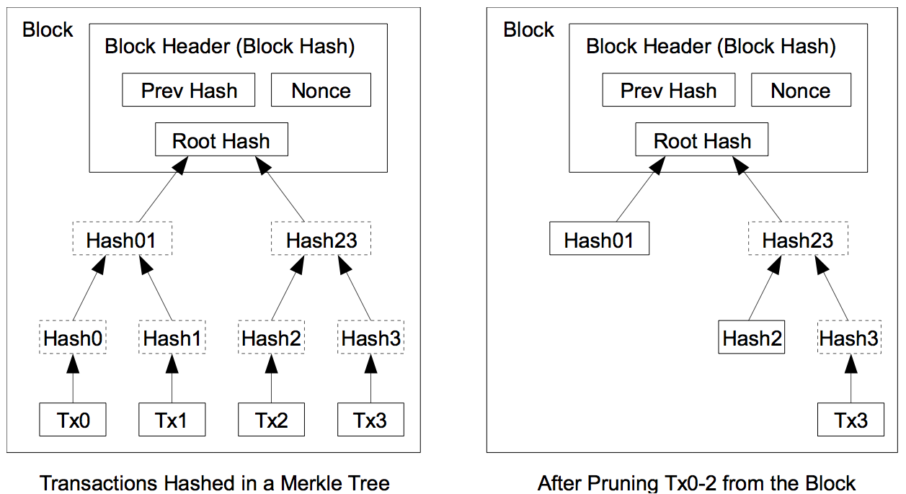

Dive into Bitcoin
요즘 비트코인이 한창 인기입니다. 버냉키의 비트코인 관련 발언으로 두달 사이에 비트코인의 가치가 열배가까이 급등했습니다. 예전 1 BTC (비트코인 단위) 당 100 USD 미만하던 때부터 지켜본 입장에서, 추세에 힘입어 비트코인에 대한 조금은 기술적인 이야기를 해볼까 합니다.
비트코인은 2008년 익명의 개발자 Satoshi Nakamoto가 발표한 논문에서 시작되었습니다. 초기 비트코인 네트워크 안정화에 힘쓰다 어느순간 종적을 감춘 Satoshi는 아직도 그 정체가 밝혀지지 않았습니다. 심지어 일본인인지조차 불분명합니다.
비트코인 네트워크가 어떻게 돌아가는지는 2008년에 발표된 저 Satoshi의 논문 "Bitcoin: A Peer-to-Peer Electronic Cash System"을 보면 이해할 수 있습니다. 물론 이해하기 쉽지 않습니다. 특히나 저를 포함하여 전산 쪽 비전공자에게는 더욱 어렵습니다.
Concept
비트코인의 근간을 이루고 있는 단어가 있습니다. 익명성, Peer-to-peer, 공개, 이 세가지 단어가 비트코인의 특징을 가장 잘 나타냅니다. 비트코인의 거래는 순전히 지갑 주소로만 진행되어 지갑의 원 주인이 누군지 알지 못합니다. 비트코인은 관리주체가 없습니다. 일반 은행은 중앙 서버를 운용하여 관리하지만 비트코인은 비트코인 네트워크에 접속한 모든 클라이언트(노드)가 비트코인 거래를 관리 및 감시합니다. 비트코인은 관리의 투명성을 보장하기 위해서 비트코인의 시작시점(2009년)부터 지금까지의 모든 거래를 공개합니다.
공개된 네트워크는 접속한 노드의 신뢰를 기반으로 합니다. 즉, 네트워크에 부당한 이득을 취하려는 노드가 있다면 이 노드보다 정직한 노드가 많아야 합니다.
Public Key, Private Key
비트코인은 공개키 개인키 기반 암호화 기법을 사용합니다. 비트코인 지갑은 나만이 소유해야하는 개인키와 널리 알리는 공개키 짝으로 이루어져 있는데 이 공개키가 지갑의 주소입니다. 자신이 만든 거래가 확실하다는 의미로 자신의 개인키를 이용해 데이터를 암호화하면, 다른 사람은 해당 공개키를 이용해 복호화 할 수 있습니다.
또한 타인이 내게 메세지나 데이터를 보낼 때 내 공개키를 이용해 암호화 하면 내 개인키로 그 값을 복호화하여 원래 데이터를 얻어낼 수 있습니다.
Transaction (거래)
비트코인의 가장 기본 단위는 지갑 사이의 거래(Transaction)입니다. 비트코인의 목적은 전자 화폐를 구현하는 것이므로 개인간, 개인과 사업자간 거래가 기본이 될 수 밖에 없습니다.
이 거래의 안정성을 보장하기 위해 비트코인은 코인의 생성부터 현재 거래까지 사슬(Chain)을 엮어서 해당 거래가 적합하다는 것을 보장하도록 구현하였습니다.
조금 어렵죠? 일단 아래의 그림을 봅시다.

이 그림이 거래의 가장 간단한 1 input - 1 output 으로 엮여진 거래사슬 그림입니다. 하나의 거래는 기존 거래를 입력으로 받고 보낼 대상 주소를 출력으로 합니다. 모든 거래는 거래 전체를 포괄하는 Hash 값을 만드는데 이전 거래의 Hash 값을 이용해 내가 그 거래의 수혜자라는 인증(Signature)을 하고 해당 비트코인을 보낼 대상 까지 포함하여 새로운 Hash를 만들어 해당 거래가 적합하다는 것을 확인합니다.
예를 들어보면, 제가 A라는 사람으로부터 0.1 BTC (비트코인은 소수점 8자리까지 표현가능 합니다) 를 받았다고 하고 그 비트코인을 B라는 사람에게 다시 온전히 보낸다고 합시다. 이때 A라는 사람으로부터 받은 비트코인에 대한 거래가 있습니다. 해당 거래를 의미하는 Hash 를 Hash-A라고 하면 그 거래가 진짜 나에게 온 것이라는 걸 확인하기 위해 Hash를 이용해 Signature를 만듭니다. 그리고 B의 지갑주소와 보낼 거래량을 포함하여 새로운 해시를 만듭니다.
Hash-B := hash({Hash-A, SignatureForTxA, PublicKeyB, TransferAmount})
이 전체가 하나의 거래가 됩니다. 즉 현재의 거래는 과거를 기반으로 하기 때문에 Chain을 계속 거슬러 올라가면 최초의 Bitcoin이 발생한 시점을 찾을 수 있습니다. 그 거슬러올라가는 모든 거래가 적합한 거래였다면 해당 거래 또한 적합하다고 볼 수 있습니다.
이 방식을 사용하면 이중지불(double-spent) 문제를 막을 수 있습니다. 거래 자체가 시간순서로 사슬을 엮기 때문에 이중지불이 된다면 하나의 거래에 대한 다음 사슬이 두개가 발생하게됩니다. 이 거래의 합이 기존까지 전달되던 비트코인의 합보다 크면 부당거래, 이중지불이 된것이라 판단할 수 있습니다.
이 모든 과정이 전체 네트워크에 공개되므로 모든 노드가 거래의 적합성을 검사합니다. 정직한, 즉 비트코인 프로토콜을 준수하는 노드가 네트워크의 다수를 차지한다면 잘못된 거래는 걸러지고 결국 네트워크에서 사라지게 됩니다.
Timestamp Server
거래는 모든 네트워크에 공개되지만 그 거래 전체를 모든 노드가 가지고 있기는 어렵습니다. 이 거래를 시간 순서로 나열하는 데에 Timestamp 개념이 도입되었습니다. Timestamp는 여러 거래를 하나의 블럭으로 연결짓고 해당 블럭을 최대한 많은 노드에게 퍼트리는 역할을 합니다. 비트코인의 흐름은 시간순서(chronicle)를 따르지만 여러 비트코인 통화의 흐름은 동시다발적으로 일어납니다.

Timestamp Server는 이 여러 거래를 시간단위로 묶어서 해당 거래 전체를 하나의 hash로 표현합니다. 이 묶음(블럭) 또한 시간순서로 연결되어 이전 블럭의 Hash를 사용하여 다음블럭의 hash를 만듭니다.
거래의 데이터를 줄이기 위해 거래 단위는 Multi-Input, Multi-Output이 가능합니다.
Proof-of-Work
비트코인 시스템은 철저히 분산된 시스템입니다. 위에서 언급한 Timestamp Server 또한 집중되어있지 않고 네트워크 전체에 퍼져있습니다. 이 전체 네트워크에서 Timestamp를 이용해 거래를 검증하는 방법은 블럭의 헤더(80바이트)와 이전 거래 블럭의 Hash를 이용해 새로운 Hash(SHA-256)를 만드는 과정입니다.

Block의 hash는 연속된 0으로 시작합니다. 이 값이 결정되는데 영향을 미치는 것이 Target 입니다. Target은 블럭이 만들어지는 목표 수치같은 것인데, Block의 Hash를 만들때 Target보다 작은 값을 가지지 않으면 새로 만들어야만 합니다. 즉, 기준치를 만족할때 까지 계속 Hash 를 생성하는 작업을 반복합니다. 만족한 Hash는 단 한번의 검증(블럭 헤더를 Hash하여 target에 맞는지)을 통해 적합성 여부를 확인할 수 있습니다.
Nonce
그런데 여기서 문제는, 입력되는 데이터(블럭의 헤더)가 같으면 얻어지는 hash도 항상 같을 수 밖에 없다는 점입니다. 같은 블럭으로 무한정 Hash 구해봤자 target을 만족하지 못합니다. 이를 해결하기 위해 Block header에 Nonce를 추가하였습니다. Hash 생성시 최초 Nonce를 0으로 두고 hash를 구합니다. 구해진 Hash가 Target을 만족할 때까지 nonce를 1씩 증가시키며 Hash를 구합니다. Nonce가 1 증가되는 것으로 인해 전체 Hash 값은 완전히 달라지게 됩니다.
Longest block chain
이 Proof-of-Work 작업이 반복되면서 블럭사슬이 만들어집니다. 이 블럭사슬이 가장 긴 것이 가장 많은 Proof-of-Work를 거친 사슬임을 의미하고 이 사슬이 다른 짧은 사슬보다 우위를 가집니다. 즉, lastest chain에 대해 Timestamp Server 각자가 Proof-of-Work를 수행하므로 특정 상황에서는 서로 다른 데이터를 기반으로 다음 블럭을 만들어 낼 경우도 있습니다. 이 때 이 두가지 서로 다른 블럭이 네트워크에 퍼지고 이 두가지 경우를 가지고 네트워크에서 다시 다음블럭을 만드는 proof-of-work를 수행합니다. 이 때는 네트워크가 적어도 두개의 서로 다른 사슬을 가지고 수행을 하게 됩니다.
그러나 바로 다음 블럭을 만들어내는 것 또한 겹치게 될 확률은 극히 적기에 다음 블럭을 누가 먼저 만드느냐에 따라 이전 블럭의 두개의 사슬 중 승자가 정해집니다. Timestamp Server가 Proof-of-Work를 수행하는 도중 작업하고 있는 Block 숫자로 다른 블럭이 들어오면 추후에 누가 승자가 될 지 모르기 때문에 보관해두고 있다가 추후 승자를 보고 둘 중 하나를 선택합니다.
Difficulty
바로 위에서 Target을 언급했습니다. 이 Target은 비트코인 블럭 처리 시간을 조절합니다. 비트코인이 활성화되면 더 많은 노드가 네트워크에 들어옵니다. 그 결과 전체 네트워크의 처리능력이 늘어나고 문제를 해결하는 속도도 빨라집니다. 비트코인 생성의 가정이 10분당 25BTC 이므로 이 평균 처리 개수를 조절하기 위해 문제 해결 난이도를 상승시킵니다.
이 난이도는 2016개 블럭이 처리될 때 마다 전체 노드가 계산을 합니다. 이전 2016개 블럭을 처리하는데 걸리는 시간을 기준으로 새로운 난이도는 2016개 블럭의 처리시간이 2주가 되도록 조절합니다. 이 조절된 기준치가 Target입니다. Target을 이용해 Difficulty를 계산하는 공식은 Bitcoin wiki에서 소개하고 있습니다.
Network
비트코인 네트워크가 운용되는 과정은 몇가지 단계가 반복적으로 일어나는 과정입니다.
-
새 거래(Transaction)는 모든 노드에 전파됩니다.
-
모든 노드는 새 거래를 하나의 블럭으로 합칩니다. 이 때 거래 자체를 Block header의 Hash를 만드데 쓰이는 것이 아니라, 거래의 Hash를 이용해 Merkle Root를 만들어 이 hash값을 사용합니다.
-
모든 노드는 모은 블럭에 대해 Proof-of-Work를 수행합니다.
-
노드가 Target을 만족하는 hash를 구하면 모든 노드에게 블럭은 전파합니다.
-
해당 블럭을 수신한 노드는 모든 거래가 이전 hash와 비교해서 유효한지 확인하고 이미 소비되지 않은 블럭이면 허락합니다. 소비되었다는 의미는 이미 해당 블럭 number 이후로 chain이 만들어졌는지를 의미합니다.
-
수신한 노드가 해당 블럭이 적합하다고 판단하면 해당 블럭의 Hash를 이용해 다음 블럭을 만드는 일을 시작합니다.
위의 순서를 보면, 가장 멀리나간 블럭, 즉 블럭 사슬이 가장 긴 사슬이 대다수의 노드가 허용한 블럭입니다.
Incentive
블럭을 만드는 Proof-of-Work는 비트코인 네트워크의 안정성을 확보하는 일이지만 소비적인 일이기도 합니다. 시간과 전력을 들여 Hash를 계산하는 일은 전체 네트워크에서 정직한 노드의 처리능력이 다른 부정한 시도를 넘도록 하여 네트워크 안정성을 유지하는데 필수적입니다. 이 소비적인 일이 계속 일어나도록 하기위해 프로토콜 상으로 매 블럭의 최초 거래는 해당 블럭의 생성자의 지갑으로 전송되는 새로 만들어진 비트코인 거래입니다. 즉, 가장 먼저 블럭을 만들어서 문제를 해결(Proof-of-Work)한 노드가 해당 블럭의 코인(현재는 25 BTC)을 소유합니다.
이 새로 생성되는 비트코인은 초반에는 블럭당 25 BTC 이다가 점차적으로 감소하여 결국에는 전혀 생성되지 않게 됩니다. 이 비트코인 생성이 멈출때 까지 총 생산되는 비트코인은 2천 백만개로 한정되어 있습니다. 하나의 비트코인이 소수점 8자리까지 표시할 수 있다는 것을 감안하면 작지않은 수치입니다. 그러나 이 이후로는 추가적인 비트코인은 생성되지 않습니다.
그 이후의 네트워크 참여도를 높이는 방법으로 거래수수료(Transaction Fee)가 있습니다. 거래 수수료는 거래 하나의 Input 과 Output의 차이 금액을 의미합니다. 이 차이는 수수료로, 블럭 생성 노드가 추가적으로 얻게됩니다.1
Reclaiming Disk Space

모든 거래를 다 보관하는 것은 데스크탑에서는 가능하겠지만 현재까지 4년정도의 거래량이 수 GB를 넘은 것을 볼 때 모든 노드가 다 보관하는 것은 불가능합니다. 디스크 공간을 절약하기위해 최근의 거래를 제외한 이전 거래는 없앨 수 있도록 설계되었습니다. 이를 구현하는 방법으로 Merkle Tree가 사용되었습니다.
위 그림에서 보는바와 같이 Tx0, Tx1, Tx2 거래가 불필요하다면 hash의 root만 남기고 없앨 수 있습니다. 블럭 전체의 거래가 필요 없어진다면 헤더만 남겨도 됩니다. 헤더는 80byte이므로 1년에 4.2MB의 헤더만 생성이 되고 메모리 증가량을 볼 때 충분히 주 메모리에 보관이 가능한 수치입니다.
Conclusion
지금까지 Satoshi가 제안한 논문을 중심으로 비트코인이 어떻게 설계되었는지 알아보았습니다. 논문에는 좀 더 자세한 설명이 있는 부분이 있지만 이 글에서는 중요하지 않은 부분은 제외하였습니다.
비트코인이 지금은 투기적인 성향이 강하지만 앞으로 각국의 정책 반영이 어떻게 되느냐에 따라 통화로 자리잡느냐 아니면 그저 주식의 다른 갈래로 남느냐.. 가 결정될 것입니다. 대체통화로서의 비트코인은 익명성, 공개, 관리주체가 없는것 으로 인해 상당한 장점이 있습니다.
아무쪼록 이 글을 읽고 비트코인을 이해하는데 조금이나마 도움이 되면 좋겠습니다.
-
블럭 최초의 거래에 수수료가 포함되어 거래됩니다. ↩